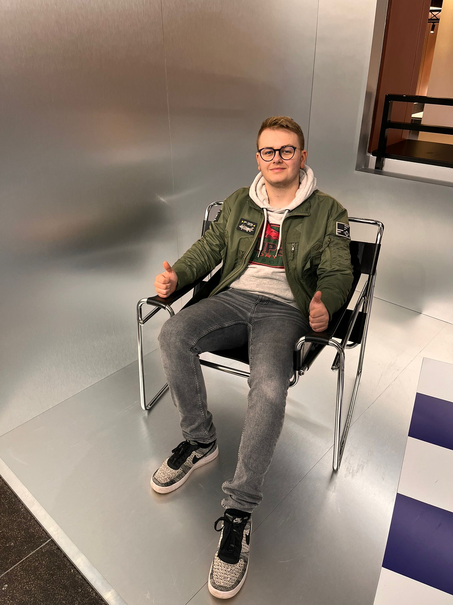

Leer mij kennen

Wie ben ik?
Ik studeer Software Developer aan het ROC van Twente in Enschede. Aan het eind van de middelbare school koos ik bewust voor de richting game development — en dat was de beste beslissing die ik heb gemaakt.
Nu ik in jaar 3 zit kan ik zeggen dat ik elke dag met plezier naar school ga. Bijna elke opdracht heeft te maken met game development, wat mij elke keer weer motiveert om er het beste van te maken.
Buiten school heb ik een fijn gezin (vader Michel, moeder Marloes en broertje Thomas), werk ik bij de PLUS, en besteed ik mijn vrije tijd aan gamen, films kijken en zelf games bouwen.
Wat doe ik graag?
Mijn grootste hobby. Ik game dagelijks met mijn broertje Thomas of neef Quinten en Thijn op de Xbox Series X. Mijn favoriete game is GTA Online met maar liefst 3054 uur gespeeld. Ik ben opgegroeid met games — mijn eerste GTA speelde ik al toen ik 3 was.
Andere favorieten: Assassin's Creed, Watch Dogs, Sifu, Ready or Not en Hitman.
Ik heb een groeiende collectie actie- en martial arts films op dvd en blu-ray. John Wick: Chapter 4 in de bioscoop was een onvergetelijke ervaring — de hele zaal trilde bij elk schot. Laatst ook Interstellar en Inception ontdekt.
Op school kan ik mijn creativiteit helemaal kwijt in game design en programmeren. Ik zie programmeren als een puzzel — als je het probleem oplost voelt dat echt goed. Het groepsproject MonkeySurvivors was één van mijn beste ervaringen op school.
Wat kan ik?
Deze eigenschappen passen goed bij game development: ik word niet snel afgeleid, heb geduld als iets niet meteen werkt, en haal voldoening uit het oplossen van problemen voor de deadline.
Ik wil blijven groeien en nieuwe dingen leren, zodat ik in de toekomst verder kan met wat ik echt leuk vind.